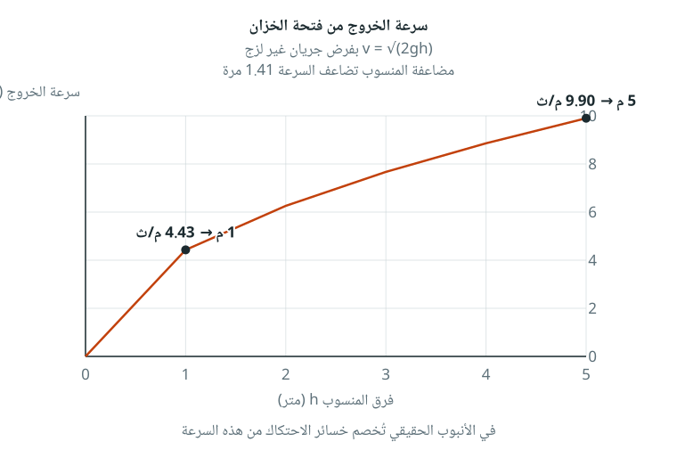

معادلة برنولي
Bernoulli's Equation
تربط معادلة برنولي بين الضغط والسرعة والارتفاع على خط انسياب في جريان مستقر، عندما يمكن إهمال قابلية الانضغاط وفقد الطاقة بالاحتكاك.
معادلة برنولي صياغة لحفظ الطاقة الميكانيكية على خط انسياب في جريان مستقر: p + ½ρv² + ρgh = ثابت. الحدّ الأول طاقة الضغط في وحدة الحجم، والثاني الطاقة الحركية، والثالث طاقة الوضع. تُستخدم لتقدير سرعة التدفق من فرق الضغط، وتحليل أنبوب فنتوري ومقياس بيتوت وسطح الماء في خزان.
اشتقاقها يفترض مائعًا غير لزج وغير قابل للانضغاط، بلا شغل خارجي وبلا انتقال حرارة. في هذه الحالة يتحوّل أحد الحدود إلى آخر دون خسارة: حيث ترتفع السرعة يهبط الضغط السكوني، وحيث يرتفع المنسوب تنخفض السرعة.
عند فتحة خزان على فرق منسوب h تعطي المعادلة v = √(2gh). خزان بفرق 5 م يعطي 9.90 m/s عند الفتحة، وهي نتيجة لا تعتمد على كثافة السائل. والتسارع هنا يأتي من تدرّج الضغط داخل المائع، لا من قوة خارجية مضافة.
كيف تعمل الظاهرة؟
تُشتق المعادلة من قانون نيوتن مطبّقًا على عنصر مائع على خط انسياب. القوة المحصّلة على العنصر هي فرق الضغط على طرفيه ناقص وزنه، والشغل الذي تبذله هذه القوة على إزاحة ds يساوي التغيّر في الطاقة الحركية. بترتيب الحدود يظهر أن مجموع p + ½ρv² + ρgh ثابت على المسار. معنى ذلك أن تسارع الجسيم لا يأتي من شفط، بل من تدرّج ضغط: الجسيم يسرع فقط إذا كان الضغط خلفه أعلى من أمامه، فينشأ فرق الضغط والسرعة معًا من هندسة المجرى، وليس أحدهما سببًا للآخر خارج تلك الهندسة.
العلاقة بالأرقام
ماء في خزان مفتوح وفرق المنسوب 5 م إلى الفتحة: v = √(2 × 9.81 × 5) = 9.90 m/s. وضغط الركود لماء بسرعة 10 m/s: ½ρv² = 0.5 × 998 × 100 = 49.9 kPa، وهو ما يقيسه أنبوب بيتوت متجهًا نحو الجريان. وللهواء (ρ = 1.204) بسرعة 30 m/s: ½ρv² = 542 Pa، وهي القيمة التي تُبنى عليها قراءة مقياس سرعة الطائرة. الحدّ ½ρv² يُسمّى الضغط الديناميكي، ونسبته إلى الضغط السكوني مقياس للانضغاطية.
مفاهيم متقاربة
الخلط الأول: قراءة المعادلة بسببية معكوسة، أي أن السرعة العالية تُنشئ ضغطًا منخفضًا. العلاقة توازن طاقة، والسبب الفيزيائي تدرّج الضغط الذي يسارع الجسيم؛ وفي أنبوب أفقي بمساحة متغيّرة، الانقباض يفرض تسارعًا ويهبط الضغط نتيجة له. الثاني: تطبيقها بين نقطتين على خطَّي انسياب مختلفين في جريان دوّار، والثابت يتغيّر بين الخطوط. الثالث: استخدامها في الجريان المضطرب كأن الاحتكاك غير موجود، فتُنتج سرعات مبالغًا فيها لأن الطاقة المفقودة خارج الحساب.
حدود التطبيق
تنطبق على جريان مستقر، غير لزج، غير قابل للانضغاط، على خط انسياب واحد، وبلا شغل مضخة أو توربين. عند إضافة شغل تُكتب بصيغة الطاقة العامة مع حدّ شغل المضخة. في الغازات تصح حتى نحو 0.3 ماخ؛ فوق ذلك تتغيّر الكثافة ويلزم استخدام علاقات الانضغاطية. وفي الجريان الحقيقي تُضاف خسائر الاحتكاك بين النقطتين. وفي الجريان غير المستقر يظهر حدّ ضغط زائد مرتبط بمعدّل تغيّر التدفق، فتُستخدم معادلة الطاقة الممتدة لا الصورة البسيطة.

| الكمية | القيمة | المصدر |
|---|---|---|
| سرعة الخروج من فتحة على فرق منسوب 5 م | 9.90 m/s | [1] |
| ضغط الركود لماء بسرعة 10 م/ث | 49.9 kPa | [1] |
| الضغط الديناميكي لهواء بسرعة 30 م/ث | 542 Pa | [2] |
| تسارع الجاذبية المستخدم في الحساب | 9.81 m/s² | [1] |
المصادر
- 1 University Physics Volume 1 — 14.6 Bernoulli's Equation — OpenStax. openstax.org/books/university-physics-volume-1/pages/14-6-bernoullis-equation · اطُّلع عليه 2026-11-16
- 2 Bernoulli's Equation — NASA Glenn Research Center. www1.grc.nasa.gov/beginners-guide-to-aeronautics/bernoullis-equation/ · اطُّلع عليه 2026-11-16
- 3 University Physics Volume 1 — 14.1 Fluids, Density, and Pressure — OpenStax. openstax.org/books/university-physics-volume-1/pages/14-1-fluids-density-and-pressure · اطُّلع عليه 2026-11-16
استشهد بهذا المصطلح
الصيغتان مبنيتان من بيانات الصفحة نفسها: العنوان والتاريخ ورابط النسخة المنشورة.
معادلة برنولي — Bernoulli's Equation. (2026). ديوان المعرفة — انفراد. https://infiradev.com/diwan/terms/bernoulli-equation.html
@misc{bernoulli-equation2026,
title = {معادلة برنولي},
titleaddon = {Bernoulli's Equation},
howpublished = {{ديوان المعرفة — انفراد} — مرجع علمي عربي},
year = {2026},
url = {https://infiradev.com/diwan/terms/bernoulli-equation.html},
urldate = {2026-11-16},
note = {مراجعة علمية: مراجعة آلية — ديوان المعرفة (روابط المصادر + عقد المحتوى + وجود الرسم) 2026-11-16}
}
راجعه: مراجعة آلية — ديوان المعرفة (روابط المصادر + عقد المحتوى + وجود الرسم) 2026-11-16 · 2026-11-16 · آخر تحديث 2026-11-17